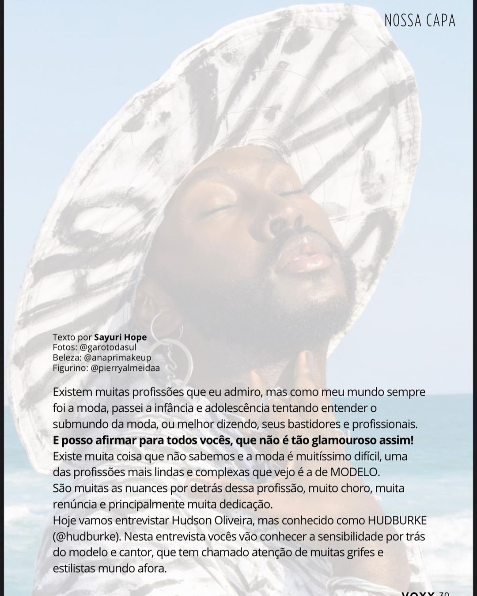
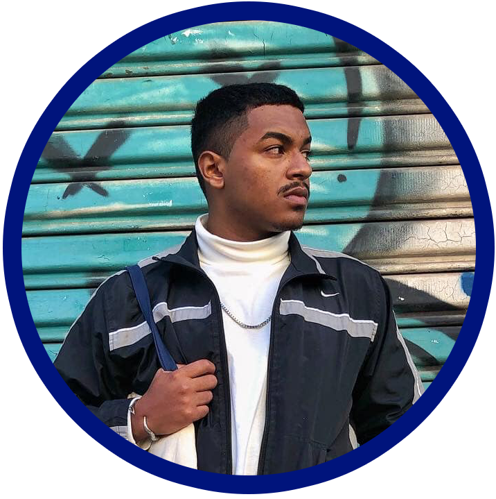
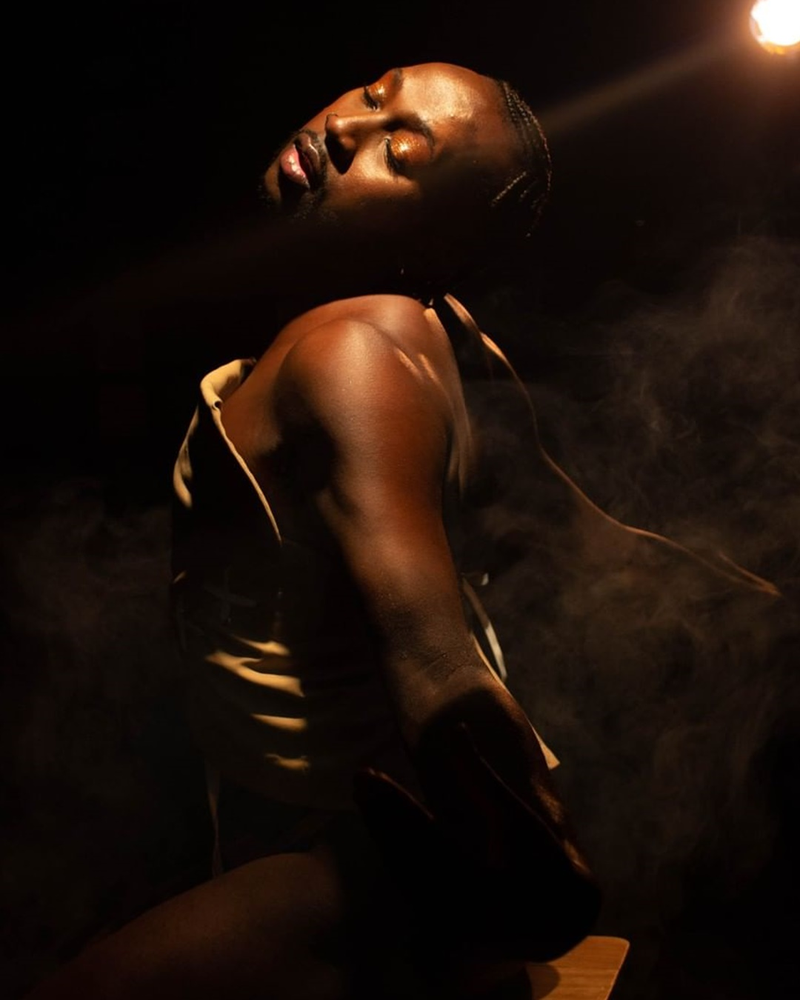
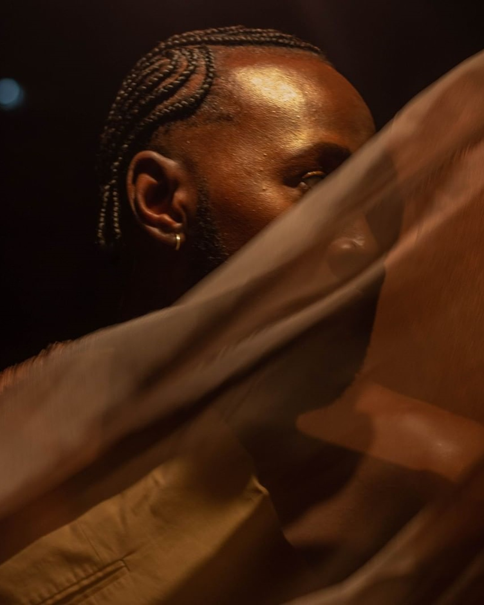
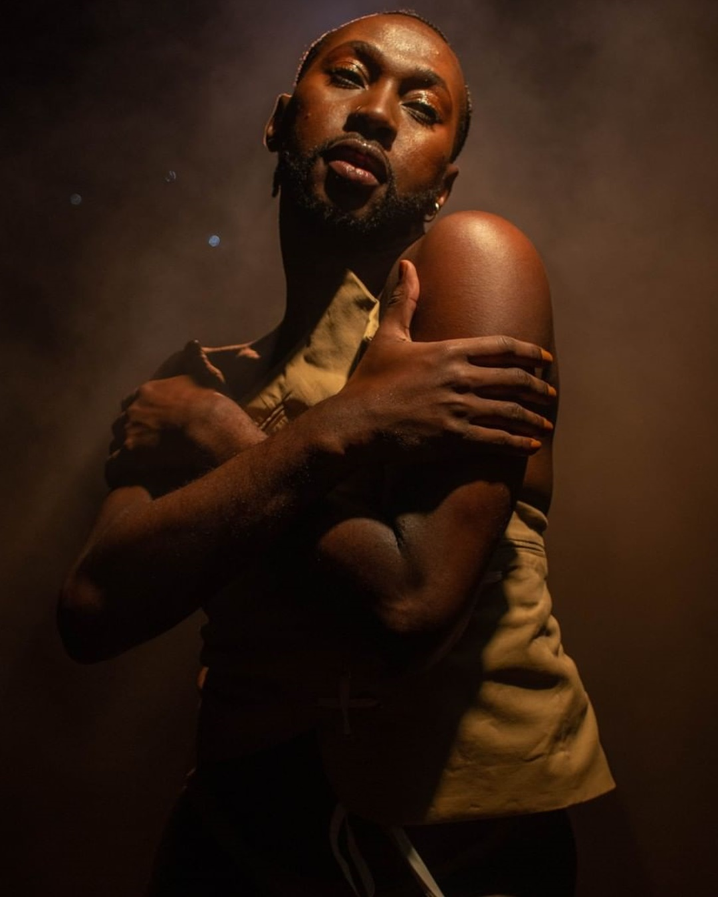
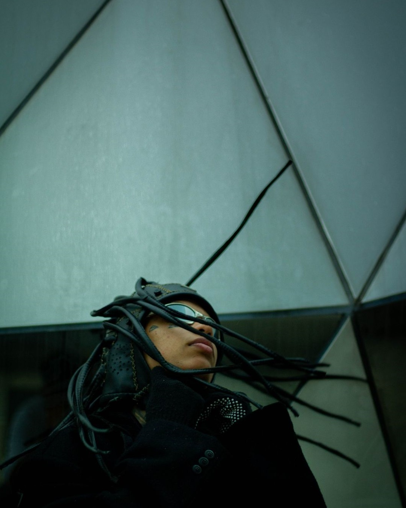
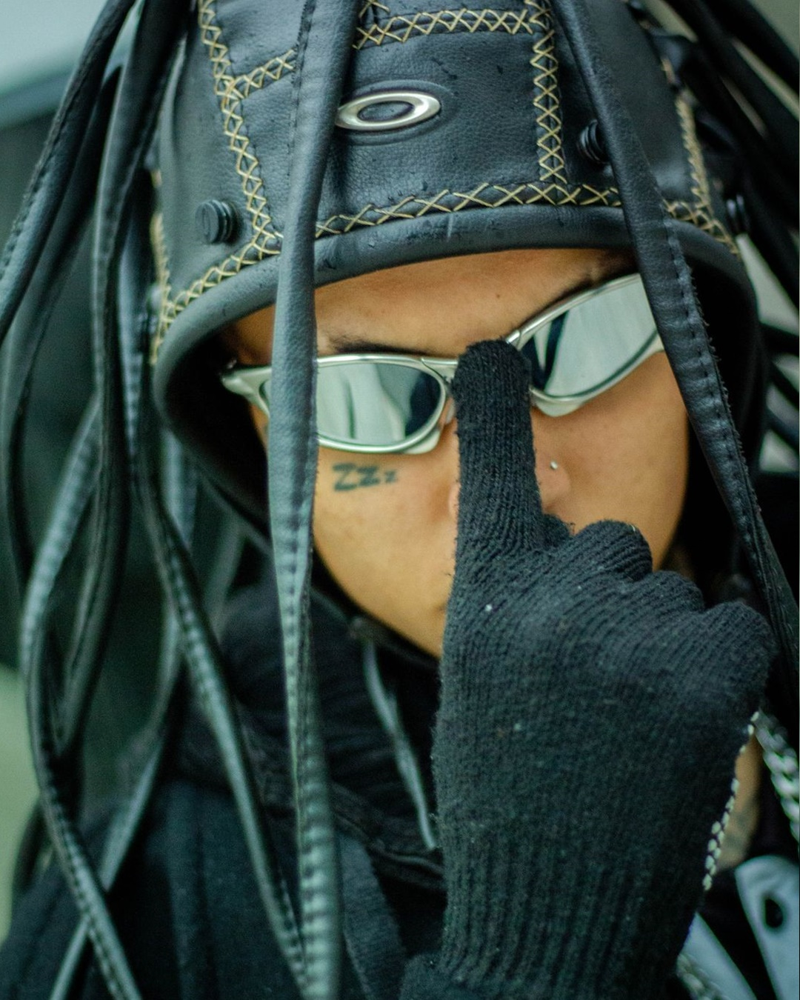

GAROTO DA SUL
UM POUCO SOBRE GAROTO DA SUL
Gilberto Junior, também conhecido como Garoto da Sul é um fotógrafo de 19 anos, nascido e criado na periferia do Extremo Sul de São Paulo, no Jardim Ângela.
Após a separação dos seus pais, ele se apegou muito ao álbum de fotos, onde havia boas vivências registradas. A partir disso, sua relação com a fotografia mudou totalmente! Ao contrário de antes que fugia de câmeras, floresceu nele a necessidade de registrar momentos bons que vivia.
“Sempre que vou dar um click, tenho em mente poder trazer para dentro da foto quem estará vendo ela, independente se a pessoa fez parte daquilo, tento criar conexão com a imagem para que tenha um peso significativo ao vê-la”.
Gilberto veio de família humilde, e não pode ter a chance de fazer um curso na área da fotografia. Porém, isto não foi um empecilho para continuar com seu sonho. “Uso o Youtube como plataforma de estudo para cada vez aprimorar meu trabalho, entender melhor a fotografia e não estagnar minha arte”.





